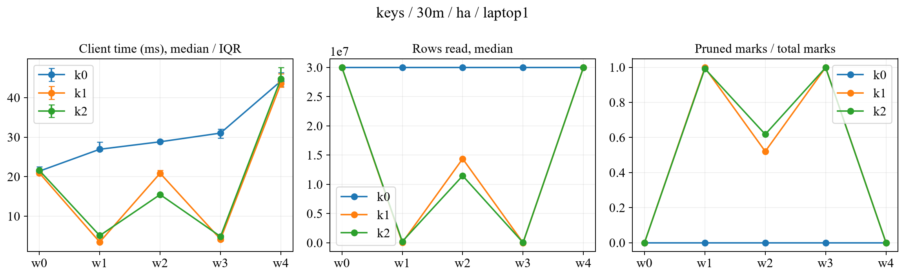
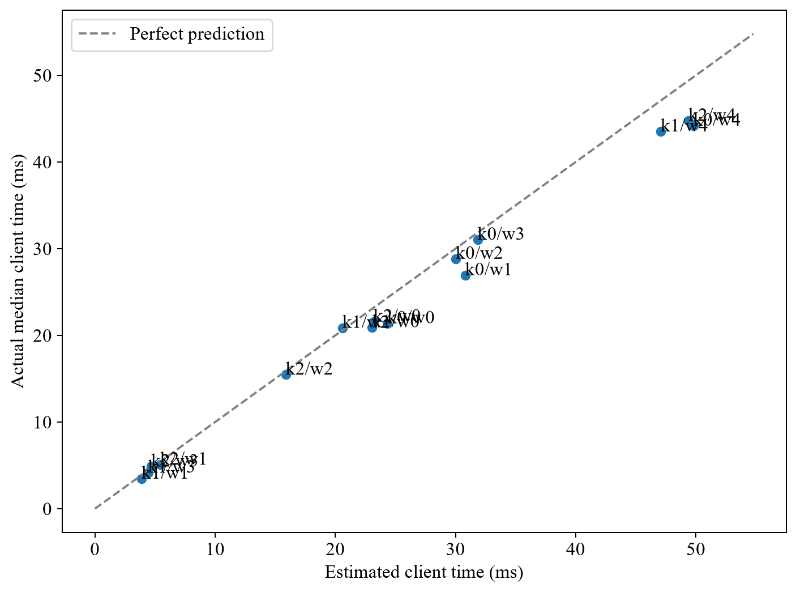

BÁO CÁO NGHIÊN CỨU HỌC PHẦN
HỆ QUẢN TRỊ CƠ SỞ DỮ LIỆU PHÂN TÍCH
Nghiên cứu thực nghiệm cơ chế nội tại MergeTree trên tập dữ liệu Hits 30M
Nhóm tác giả thực hiện:
Nguyễn Thị Ngọc Hà — Tuấn — Tài
THÁNG 11 / 2026
Trong các hệ thống phân tích dữ liệu trực tuyến hiện đại (OLAP), dữ liệu sự kiện người dùng (clickstream) có đặc thù phát sinh liên tục với tốc độ cao, tính chất append-only và khối lượng lên đến hàng triệu sự kiện mỗi ngày. Việc truy vấn các chỉ số như số lượng người dùng duy nhất, thời gian lưu trang hay tỷ lệ chuyển đổi đòi hỏi hệ quản trị cơ sở dữ liệu phải đáp ứng đồng thời hai mục tiêu đối nghịch: tốc độ nạp dữ liệu cao và độ trễ truy vấn tính bằng mili-giây.
ClickHouse là hệ quản trị cơ sở dữ liệu hướng cột mã nguồn mở được thiết kế riêng cho các tác vụ OLAP thời gian thực. Trái tim của ClickHouse là dòng bảng động cơ MergeTree. Hiệu năng thực tế của MergeTree phụ thuộc mật thiết vào các quyết định thiết kế vật lý:
Một granule là đơn vị dữ liệu logic tối thiểu được đọc từ đĩa. Với kích thước granule cố định \(g\), số lượng marks được tính theo:
\[ M \approx \left\lceil \frac{N}{g} \right\rceil \]
Khi truy vấn có điều kiện lọc thực thi, bộ tối ưu hóa đối soát điều kiện với primary.idx để loại bỏ các granule không thỏa mãn. Số dòng ước tính đọc được xác định theo:
\[ R_{\text{est}} \approx \min(N, \text{selected\_marks} \times g) \]
Dưới đây là bảng trích xuất tự động từ kết quả thực tế (file queries.csv trên tập 30M) thông qua lệnh python scripts/study.py export-latex:
| Khóa | Workload | Client (ms) | IQR (ms) | Dòng đọc | Cắt tỉa (%) | Speedup |
|---|---|---|---|---|---|---|
| K0 | W0 | 21.4 | 2.1 | 30,000,000 | 0.00% | 1.00x |
| K1 | W0 | 20.9 | 0.5 | 30,000,000 | 0.00% | 1.02x |
| K2 | W0 | 21.6 | 0.6 | 30,000,000 | 0.00% | 0.99x |
| K1 | W1 (CounterID) | 3.5 | 0.4 | 49,152 | 99.84% | 7.76x |
| K2 | W1 (CounterID) | 5.1 | 0.6 | 222,080 | 99.24% | 5.29x |
| K0 | W1 (CounterID) | 26.9 | 2.2 | 30,000,000 | 0.00% | 1.00x |
| K2 | W2 (EventDate) | 15.5 | 0.7 | 11,468,800 | 61.78% | 1.86x |
| K1 | W2 (EventDate) | 20.9 | 1.0 | 14,377,856 | 52.06% | 1.38x |
| K0 | W2 (EventDate) | 28.8 | 0.5 | 30,000,000 | 0.00% | 1.00x |
| K1 | W3 (Kết hợp) | 4.2 | 1.3 | 16,384 | 99.95% | 7.44x |
| K2 | W3 (Kết hợp) | 4.9 | 0.9 | 40,960 | 99.86% | 6.37x |
| K0 | W4 (Non-key) | 44.2 | 3.6 | 30,000,000 | 0.00% | 1.00x |
| K1 | W4 (Non-key) | 43.5 | 3.3 | 30,000,000 | 0.00% | 1.02x |

Mô hình \(\hat{T}_{\text{ms}} = \alpha + \beta \times N_{\text{est}}\) được hiệu chỉnh từ các tập 1M, 3M, 10M và dự đoán độc lập trên tập 30M:
| Khóa | Workload | Dự đoán (ms) | Thực tế (ms) | Sai số tuyệt đối (ms) | Sai số (%) |
|---|---|---|---|---|---|
| K0 | W0 | 24.33 | 21.40 | 2.93 | 13.7% |
| K0 | W1 | 30.81 | 26.94 | 3.87 | 14.4% |
| K0 | W2 | 30.02 | 28.83 | 1.20 | 4.2% |
| K0 | W3 | 31.84 | 31.03 | 0.80 | 2.6% |
| K1 | W0 | 23.07 | 20.93 | 2.14 | 10.2% |
| K1 | W1 | 3.89 | 3.47 | 0.42 | 12.1% |
| K1 | W2 | 20.59 | 20.87 | 0.28 | 1.3% |
| K1 | W3 | 4.43 | 4.17 | 0.26 | 6.3% |
| K2 | W2 | 15.88 | 15.47 | 0.40 | 2.6% |
| K2 | W3 | 4.69 | 4.87 | 0.18 | 3.8% |

1. Tối ưu Sorting Key: Thứ tự cột phải tuân thủ nghiêm ngặt tính chọn lọc từ cao xuống thấp và phản ánh trực tiếp mẫu truy vấn trọng tâm. Khóa K1 mang lại speedup tới 7.76x cho lọc website.
2. Index Granularity: Cấu hình \(g = 8192\) là điểm cân bằng tối ưu giữa kích thước chỉ mục trên RAM và tốc độ quét.